1 / 92

2 / 92

3 / 92

4 / 92

5 / 92

6 / 92

7 / 92

8 / 92

9 / 92

10 / 92

11 / 92

12 / 92

13 / 92

14 / 92

15 / 92

16 / 92

17 / 92

18 / 92

19 / 92

20 / 92

21 / 92

22 / 92

23 / 92

24 / 92

25 / 92

26 / 92

27 / 92

28 / 92

29 / 92

30 / 92

31 / 92

32 / 92

33 / 92

34 / 92

35 / 92

36 / 92

37 / 92

38 / 92

39 / 92

40 / 92

41 / 92

42 / 92

43 / 92

44 / 92

45 / 92

46 / 92

47 / 92

48 / 92

49 / 92

50 / 92

51 / 92

52 / 92

53 / 92

54 / 92

55 / 92

56 / 92

57 / 92

58 / 92

59 / 92

60 / 92

61 / 92

62 / 92

63 / 92

64 / 92

65 / 92

66 / 92

67 / 92

68 / 92

69 / 92

70 / 92

71 / 92

72 / 92

73 / 92

74 / 92

75 / 92

76 / 92

77 / 92

78 / 92

79 / 92

80 / 92

81 / 92

82 / 92

83 / 92

84 / 92

85 / 92

86 / 92

87 / 92

88 / 92

89 / 92

90 / 92

91 / 92

92 / 92

×
❮
❯
Sequential Support: 3D Printing Dissolvable Support Material
for Time-Dependent Mechanisms
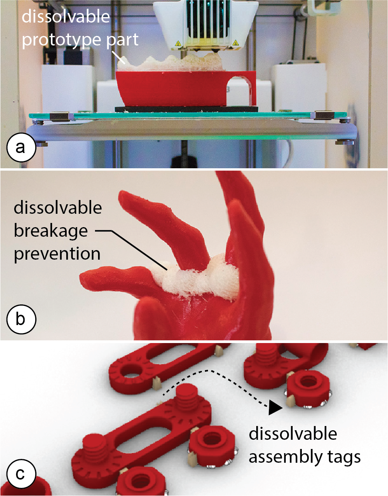
Figure 1. We leverage the transient nature of support material to create new application scenarios: (a) a dissolvable prototype part for design iteration, (b) break-age prevention that can be dissolved after transport, (c) dissolvable assembly labels that leave no marks. In addition to these discrete use cases, we also developed mechanisms that continuously dissolve over time.
In this paper, we propose a different perspective on the use of support material: rather than printing support structures for overhangs, our idea is to make use of its transient nature, i.e. the fact that it can be dissolved when placed in a solvent, such as water. This enables a range of new use cases, such as quickly dissolving and replacing parts of a prototype during design iteration, printing temporary assembly labels directly on the ob-ject that leave no marks when dissolved, and creating time-dependent mechanisms, such as fading in parts of an image in a shadow art piece or releasing relaxing scents from a 3D printed structure sequentially over-night. Since we use regular support material (PVA), our approach works on consumer 3D printers without any modifications.
To facilitate the design of objects that leverage dissolv-able support, we built a custom 3D editor plugin that includes a simulation showing how support material dissolves over time. In our evaluation, our simulation predicted geometries that are statistically similar to the example shapes within 10% error across all samples.
Introduction
Early on in the development of 3D printing, researchers realized that building objects bottom-up, layer-by-layer comes with an inherent issue: some geometries would have nothing underneath them to hold them up. To solve this issue, researchers developed support structures to keep overhangs upright [1, 9].
Early 3D printers that had only a single extruder used one material for both the model geometry and the sup-port structures. Once the 3D print was finished, the support was broken off to reveal the object. However, this left visual artifacts and was not suitable for support material inside small holes as users were not able to reach in and remove it.
Dissolvable support material [9] solved these problems: since it decomposes in a solvent, such as water, it cre-ates smooth surfaces and leaves no visual marks. Be-cause water can better access small holes, dissolvable structures can more easily be removed. Due to its many benefits, dissolvable support material (e.g., PVA) is now a widely used alternative to physically breaking off the support.
Since printing support structures requires extra time and material, the use of support has so far been perceived as an inconvenient necessity to extend the range of printa-ble geometries. In this paper, we take a different ap-proach. Rather than using support material to print sup-port structures, our idea is to make use of its transient nature, i.e. the fact that it can be dissolved when placed in a solvent, such as water, to enable a range of new use cases.
Our contributions include: (1) an exploration of alternative use cases of 3D printable support material in two categories: those that require controlled dissolving be-havior for timing and sequencing events and those that do not need precise control and only require the support material to dissolve eventually; (2) a design interface in the form of a 3D editor plugin that facilitates designing with dissolvable support material; (3) a simulation inte-grated in the design interface that visualizes how the support material dissolves over time; and (4) a step-by-step procedure to characterize the simulation parame-ters for different environments.
Sequential Support Overview
The main idea behind Sequential Support is to make use of the transient nature of support material, i.e. the fact that it can be dissolved when placed in a solvent, such as water, to enable a range of new application scenarios.
Discrete vs. Continuous Dissolving
We classify our application scenarios into two catego-ries: (1) discrete and (2) continuous dissolution.
In discrete dissolving, the timing and sequencing of how the support material dissolves plays no role, i.e. it is only of importance that the support material dissolves eventually. For instance, when iterating over a design, rather than reprinting the entire object, we use dissolva-ble support material for the part that requires iteration (Figure 1a). After dissolving the prototype part that required a change, we can print the new iteration direct-ly on top of the object.
In continuous dissolving, in contrast, the timing and sequencing of how the support material dissolves does matter. For instance, we can use dissolvable support capsules to release relaxing scents on a night stand overnight in a particular sequence and at pre-defined time steps (see Figure 2). We release the scents in the order of red, blue, green and at 86 min, 115 min and 158 min respectively.
Design Tool including Support Material Simulation
Our design tool, implemented as a plugin to the 3D edi-tor Rhino3D, supports both types of use cases, discrete and continuous. Users start by creating a regular 3D model, then assign either regular plastic (‘PLA’) or dis-solvable support material (‘PVA’) as a shader to the different object parts. Once users have assigned the material, our design tool enables a ‘time-slider’ that when dragged provides the user with a preview of how the support material will dissolve over time. The user can change the object geometry to explore different dissolving outcomes and then choose the design which produces the desired dissolved geometry to export for 3D printing. We provide a more detailed illustration of our design tool in the next section using a variety of use cases.
Application Use Cases
In this section, we will illustrate five applications, in-cluding two continuous and three discrete examples. For each example, we will show the use of our design tool, and report on the fabrication and dissolving time as well as the simulation accuracy.
#1 Overnight Scent Release (Continuous)
As mentioned above, we can use dissolvable support capsules to release relaxing scents overnight at pre-defined time steps. For this, we printed three support material spheres and filled them with essential oils (paused the print half way through, filled the capsule, continued the print as described in Printed Optics [28]). We then placed the capsules in a water container on the night stand in our bed room.
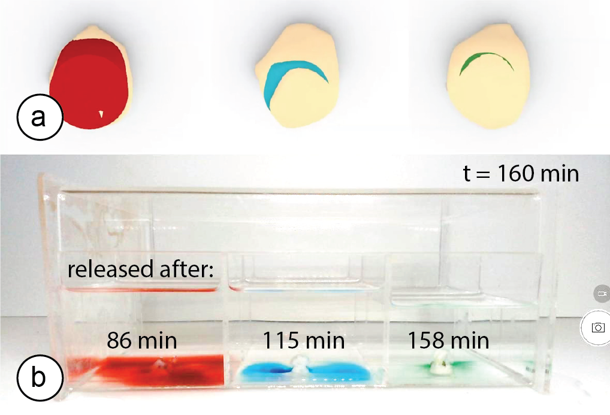
Figure 2. This nightstand box releases relaxing scents in a pre-defined sequence: the red scent first, then blue, and finally green. (a) Simulation, and (b) actual release.
Since each sphere had a different wall thickness (2.5mm, 3mm, 4mm), the scents were released one after another after 86 min, 115 min, and 158 min respective-ly. We had previously explored the timing using Se-quential Support’s simulation tool, which had predicted times of 86 min, 135 min, and 163 min for the red, blue, and green capsules.
#2 Animating Shadow Art (Continuous)
By leveraging the timing and sequencing prediction of our support material simulation, we can use dissolving support to create shadow art. Figure 3 shows an exam-ple: Before the support material dissolves, the shadow art shows the initial image, i.e. a figure standing under a sunny sky. Once the shadow art starts dissolving, the sun turns into a cloud, the raindrops become visible, and finally an um-brella appears above the figure. The setup that we used to create this sequence consisted of the 3D printed ob-ject submersed in a water container and a light source mounted above it.
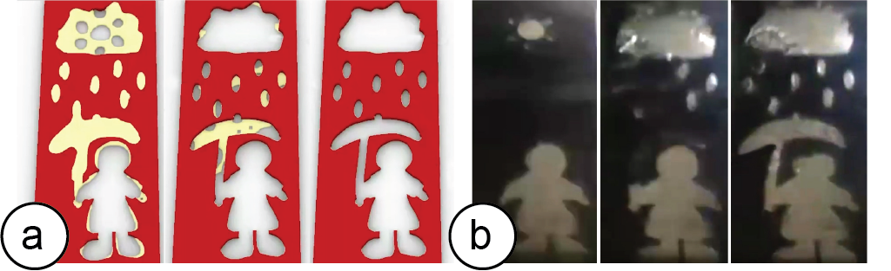
Figure 3. (a) Simulation: We time the dissolving sup-port to first convert the sun into a cloud, then show the raindrops, and finally an umbrella. (b) Physical result.
The dissolution time predicted by the simulation was 428 min vs. 380 min for the actual dissolving; the clouds, rain-drops, and umbrella were mostly dissolved at 1/2, 3/4T and at T, respectively, for both simulation and experiment.
#3: Design Iteration Partially Replacing a Part (Discrete)
Rather than reprinting the entire object during prototyp-ing, we can use dissolvable support material for the parts that require iteration. Figure 4 illustrates this using a Kinect handle that has been 3D printed to provide the user with a steadier grip while 3D scanning. We are unsure about the exact curvature and spacing for the grip and thus decide to print the grip part in dissolvable support.
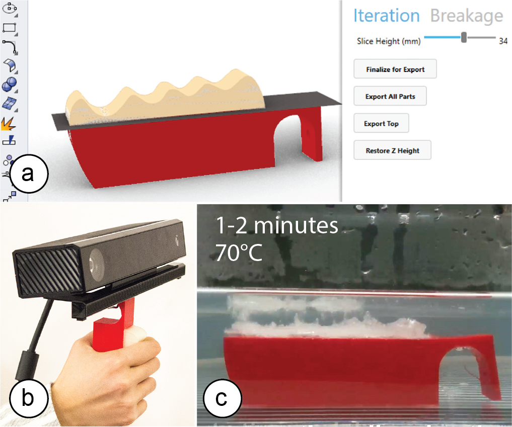
Figure 4. (a) Splitting the model, (b) testing, (c) dis-solving the top part before fabricating the next version.
We use Sequential Support’s user interface to split the model into two parts (bottom: red PLA, top: white dis-solvable PVA) using the ‘slicing height’ slider. After printing and testing, we notice that the handle does not allow for a firm grip. We thus place it into hot water (70°C), which dissolves the top part within 1-2 minutes (note that discrete scenarios work with a higher water temperature (70°C vs. 45°C, thus dissolving faster). We return to the 3D editor, modify the 3D model, then ex-port again. To reprint the top portion of the grip, we place the previously printed bottom part onto the build plate (using a custom mount and double sided tape) and print the new part directly on top.
Printing the new part took only 1h 41 min vs. 5h 16 min for printing the object from scratch (68% faster), and only took 16g material vs. 54g (71% less material). We test the handle again and now it feels right. We dissolve the top one more time and reprint it in red PLA to pro-duce the final version of the design.
#4 Breakage Support: Dissolvable Packaging (Discrete)
To prevent fragile regions from breaking during transport, we use support material to reinforce them. Figure 5 shows an example: We print this phone stand in a FabLab but are afraid it might break as we transport it home. (a) After clicking Sequential Support’s ‘stress analysis’ button, we see that the phone stand is likely going to break in the regions close to the fingers. (b) By dragging the ‘support level’ slider, the regions identified by the stress analysis (FEA) are covered in additional dissolvable material.
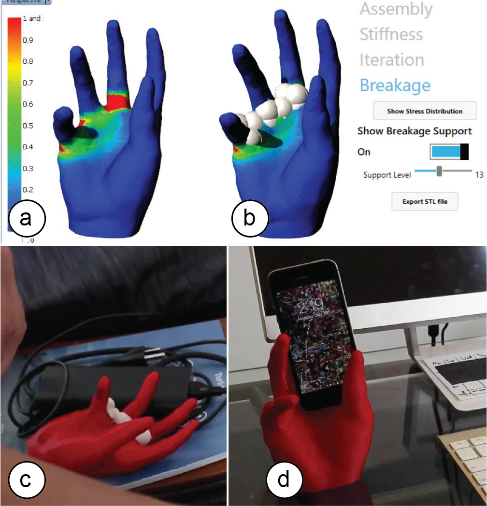
Figure 5. (a) Stress map, (b) breakage support. (c) Transporting the object, and (d) after dissolving the support material on arrival use the phone stand.
Adding the support increased printing time by only 19% (17h51 vs. 15h01) and required only 6g of support add-ed to 107g PLA. After transporting the object home, softening the support using hot water (70°C) took only 4 minutes; we then wiped off the rest by hand and were ready to use the object within 15 minutes.
#5 Assembly: Temporary Labels (Discrete)
In our final use case, we use support material to simplify assembly. Here, we design a lamp that consists of 10 different parts. First, we use Sequential Support’s user interface and attach matching labels to the parts of the object that belong together using the ‘label’ buttons (Figure 1c).
Next, we create ‘stickers’, i.e., small support structures that can be used to connect two parts together (Figure 6a). These structures work as temporary adhesives to put parts that belong together close to each other (e.g., a nut that belongs to a particular threaded protrusion). Users can break them off during assembly and dissolve the rest later together with the labels (ca. 2-3 min in 70°C).
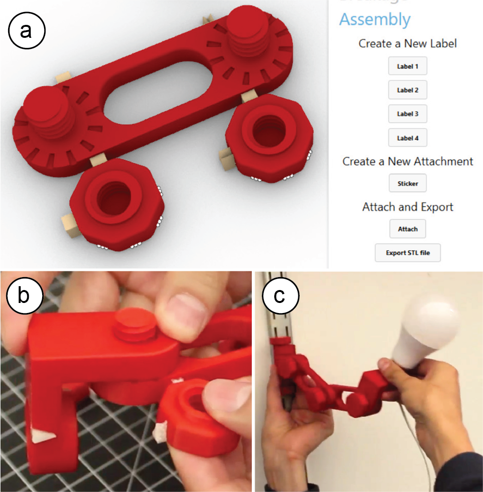
Figure 6. (a) Small support structures can be used as connectors, to hold parts in place for (b) later assem-bly. (c) Mounting the assembled lamp onto the wall.
Simulation of Dissolving Support Material
In the next section, we describe the algorithm used in our support material simulation that enables the contin-uous-time application scenarios. Our simulation takes into account different factors involved in dissolving support material, which we primarily base on related research on dissolving crystals in solvents [2, 5, 15].
Step #1: Voxelizing the Model
As soon as the user assigns support material (‘PVA’) as a shader to a part of a 3D model, we begin pre-processing the part to enable the simulation. We begin by voxelizing the part: We first compute the part’s bounding box and then fill it with voxels of size N (we use: side length = 0.3mm; the higher the resolution the more accurate the simulation, however, this comes with the trade-off of increased computational complexity that limits interactive exploration in the design inter-face). We then keep all voxels that intersect with the part’s surface and discard the rest.
Step #2: Dissolution Probability for Number of Faces
Each remaining voxel can have one of two states: dis-solving in the current time step or not dissolving. To determine the probability that a voxel will dissolve, we use the following equation (initially proposed by Gilmer et al. [5] and extended by Briese et al. [2]):
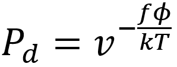
As can be seen in the formula, the probability that a voxel dissolves increases exponentially with the num-ber of faces f exposed to the solvent. A voxel that is attached on only one side and thus has 5 faces exposed to the solvent, has a much higher chance of dissolving than a voxel with only one exposed face (Figure 7). This is why support structures on a model’s surface dissolve faster than those in small inlets (e.g., screw holes), and why sparse structures dissolve faster than solids.
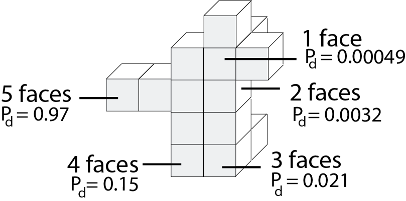
Figure 7. The more faces of a voxel are exposed to the solvent, the higher the probability that it dissolves.
In the formula, T is the temperature of the water in Kel-vin (constant at 318K or 45°C), k is Boltzmann’s con-stant (1.38064852 × 10-23 m2kg/s2K), and v and φ are constants that influence the speed of dissolution. We determined v and φ for our setup as described in section ‘Characterizing simulation parameters’ (v = 6.5, φ = 1.9).
Inserting all values into the formula, and varying the numbers of faces f from 1-5 gives us the probability for a voxel to dissolve based on its number of faces: f1 = 0.00049, f2 = 0.0032, f3=0.021, f4=0.15, f5=0.97 (Figure 7).
Step #3: Drawing a Random Sample
We then use these probabilities as inputs to a kinetic Monte Carlo simulation as described in Briese et al. [2].
We start by drawing a random number n from a uniform distribution on the interval [0,1]. This number is then compared to the probability that each voxel will dis-solve. If the random number is smaller than the dissolu-tion probability of the voxel, the voxel is dissolved. If not, it stays put.
After removing all dissolved voxels in the current time step, new surface voxels are generated to ensure that the voxel layer remains 1 voxel thick. We then repeat step #2 and #3. Figure 9 shows some results from our simulation.
Step #4: Rendering
We then convert the voxel model into a continuous surface using the Laplacian smoothing algorithm from the Weaverbird [27] Grasshopper add-on to render a more visually compelling result.
Characterizing Simulation Parameters
Next, we explain how we determine the two input pa-rameters v and φ for the dissolution formula experimentally.
Factors v (global dissolve speed) and φ (local speed)
The factor v represents the global dissolve speed inde-pendent of the number of faces. The factor φ, in con-trast, represents the local speed with which each voxel dissolves based on the number of its exposed faces f.
For instance, consider the effect of varying v and φ on a ‘star’ shape. If φ is small, the number of faces exposed to the solvent has less of an effect on the probability of dissolution of each voxel. As a result, voxels at the tips of the star (containing more exposed faces) will be dis-solved at rates similar to those voxels composing the flat sides of the star (fewer exposed faces). Therefore, with small φ, the star will remain star-shaped. In con-trast, if φ is large, the number of faces exposed will play a greater role and the tips of the star will dissolve faster than the flat sides of the star, leading the star to become sphere-like.
Collecting Test Data
To determine the parameters v and φ, we printed differ-ent shapes (sphere, star, cube). We dissolved them in water and captured images using a front view camera (Figure 8). The shapes measured: cube length: 15mm, sphere diameter: 15mm, and star outside diameter: 24mm.
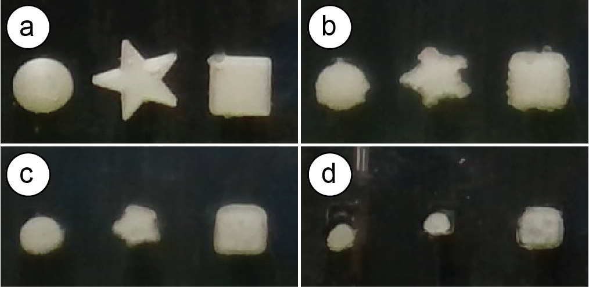
Figure 8. Dissolving shapes over time.
We used a 3-liter water tank and heated the water to a temperature of 45°C. This was the highest temperature chosen based on a trade-off between faster dissolution times and a tendency of the solvent to become cloudy at elevated temperatures, preventing us from recording the experiment.
We also created a mild current by using a 20mm mag-netic stirrer at 600rpm. The reason we use stirring is that when support material dissolves, the resulting particles stay close to the location where they dissolved, i.e., close to the object’s surface. The more particles are floating close to the surface, the slower the support material dissolves.
After immersing the objects in water, we took pictures every 8 minutes (Figure 8). We collected the same data from our simulation, i.e., we ran our simulation with an initial set of parameters for factor v and φ on the three test shapes and took screenshots from the same angle that the physical camera took photos of the real objects (Figure 9).
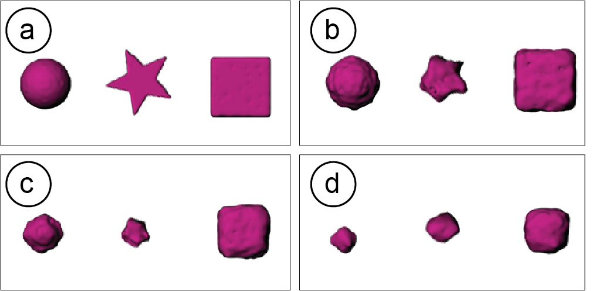
Figure 9. Simulation pictures.
Extracting & Comparing Shape Contours
We used OpenCV to extract and then compare the shape contours. We first thresholded the images and then ex-tracted huMoments to gain a feature vector describing the contours in a translation-, rotation-, and scale-invariant manner. We applied the same procedure to both the photos and the screenshots to gain a feature vector for each.
Computing Error and Adjusting Simulation Parameters
We then used the two feature vectors to compute the error (Euclidean distance) between the actual physical behavior and our simulation. This error is thus based on the compared 2D images (photos and simulation screenshots), which we use as a proxy for the difference between the full 3D shapes.
We then chose another set of simulation parameters v and φ, re-ran our simulation with the new v and φ and compared the error to the error from the previous pa-rameters (we always first picked φ, and then adjusted the corresponding v (global speed) until the probability for a voxel that has 5 faces (f5) was 97%). The results for each set of φ and v can be seen in Figure 10.
We found that φ = 1.9 and v= 6.5 lead to the best results across the three different shapes (lowest average error between the feature vectors over all time steps). Figure 10 summarizes the result for dissolving the same objects (star, sphere, cube) twice. We found that the error be-tween the two experiments differed by less than 10%.
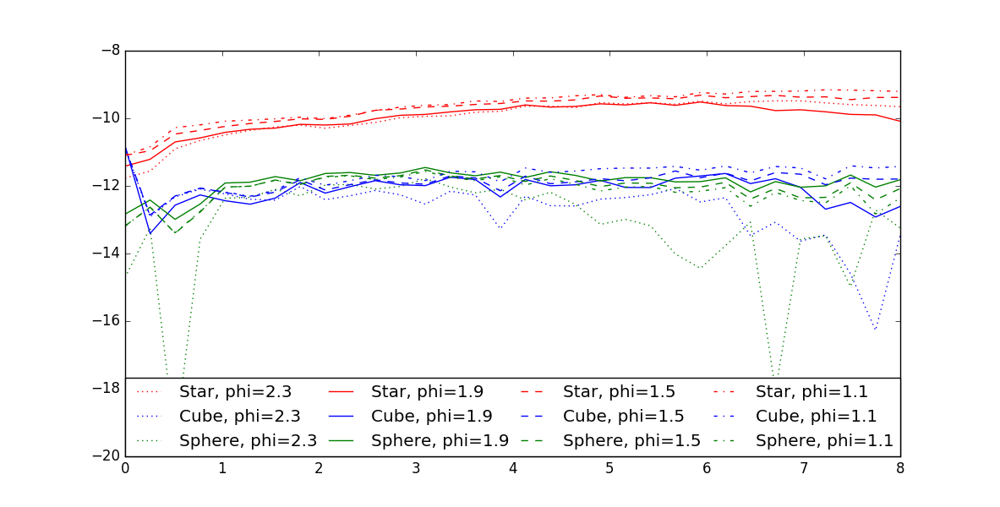
Figure 10. Graph of feature vector errors over time.
Implementation
Both the simulation and the use-case specific features in our design tool are implemented as a Grasshopper plugin for the 3D editor Rhino 3D. We used the Hu-manUI library for the user interface elements.
Design Iteration: Splitting the Model & Off-Setting It
To split the model in half at the desired height, we use the Grasshopper SplitBrep() function. On export of the .stl files, the two parts are merged into a closed solid using the Grasshopper Cap function. After splitting and capping, the two geometries are baked to a new layer in Rhino using the function GH_Bake(). We use a custom script to export each geometry on the GH_Bake layer as individual .stl files (both are regular closed meshes, i.e. the parts can have sparse infills but will be separated by a solid layer). When printing a new iteration, the system only exports the top geometry as an .stl file. We then run a python script in the background that offsets the gcode com-mands in the Z direction by the height of the PLA part.
Stress Analysis using Finite Element Analysis
To create the stress analysis for our model, we use Rhi-no’s Scan&Solve plugin. The plugin comes with a func-tion called AddFaceVectorLoad(), which we give a set of input forces with a uniform load of 100N pointing from the top to the bottom. To display the resulting stress distribution we use the function SolutionDis-playEnable(). We then get the points of the highest stress using the function QuerySolutionValue(), which returns a list of stress values at all points on the model. We sort this list using a custom python script and then create a number of spherical support structures to cover the stress points commensurate with a value chosen using the slider in the user interface.
Assembly Instructions
To set up the snap locations on both the object and the instruction labels, we generate ‘point’ objects in Rhino. When the user connects two parts, we call Rhino’s ori-ent() function to snap the instruction label onto the reference point. We use the same approach for the at-tach option.
Scent Release and Shadow Art
Both examples use the simulation described previously in section ‘Simulation of Dissolving Support Material’.
Limitations
While our approach enables new application scenarios, it is subject to the following limitations: (1) single-use only: once the support is dissolved, we cannot repeat the functionality. Thus, using support material works best for scenarios that require functionality only once, such as during assembly, product configuration, or transportation. (2) Simulation Precision: Since our set of sample shapes was small and the parameters were only optimized over a narrow range, the simulation should be fine-tuned in future work using additional shapes. (3) Speed: While the process of dissolving is fast at high water temperatures and for small amounts of support (only a few minutes for thicknesses in the vicin-ity of 1mm), it can take hours at low temperatures and when a lot of support material needs to dissolve. Thus, our work is limited to application scenarios with an extended time span, such as the overnight scent release or the slowly changing shadow art piece that could be displayed in a public plaza. (4) Overhangs: The support material cannot be used to print support structures for overhangs if those interfere with the main dissolving geometry. (5) Adherence: Current PVA support material is challenging to print since it does not adhere well to the regular PLA printing material. Printing on large flat surfaces (e.g. as in the design iteration case) facilitates adherence, while more complex geometries, such as the phone stand, are more difficult to print.
Discussion
In this paper, we provided a first exploration into how support material can be used for different application use cases. However, for each individual use case, a more extensive exploration is required to analyze the trade-offs of using support material vs. traditional approaches.
For instance, using support material in the design itera-tion use case can accomplish the same function (i.e. replacing a part of the object geometry) as by using a milling machine (see Patching Physical Objects [22]). Compared to using a mill, our approach has the benefit of not requiring additional hardware and being faster when a high temperature bath is used (minutes of dis-solving vs. hours for milling). However, when using a mill, the user can decide which part to replace after printing, whereas in our approach the user needs to decide which part requires iteration before printing. In both processes, alignment and delamination are chal-lenges that need further investigation. In contrast to approaches that use joints to connect parts [7, 20] or rafts / brims, our method does not require modifying the model.
Similar trade-offs need to be explored for the other use cases, such as the breakage support. For instance, the benefit of our approach compared to traditional packag-ing is that it reinforces the object locally at its most fragile locations; this is different from packaging foam, which provides aggregate protection across the entire object. In addition, our approach provides additional breakage support even after being removed from the main packaging and during handling, until dissolved by the end user. On the other hand, if the amount of protec-tive support is large and requires a long time to print, the high speed of traditional wrapping techniques might outweigh the advantage of local support. Finally, de-pending on the circumstances, the soluble support pack-aging may need to be protected against humidity as this could weaken the structure over time.
Conclusion
We presented Sequential Support, a system that enables users to use support material in 3D printing as a feature and not as a time- and material-consuming necessity. We showed how Sequential Support allows users to create a variety of objects for different application sce-narios, such as dissolvable prototype parts, breakage support, assembly labels, and time- and sequence-dependent shadow art and scent release mechanisms. For future work, we plan to run a qualitative study in which we will investigate how our method changes par-ticipants’ design practices. We will also use this study to explore additional application scenarios with partici-pants. In particular, we are interested to further explore use cases in fabrication in which objects have a limited life-span such as those outlined in Mobile Fabrica-tion [19], which include temporary tools and short-term fixes to everyday objects.
Acknowledgements
We thank Dishita G. Turakhia and Yini Qi for their help with video editing.